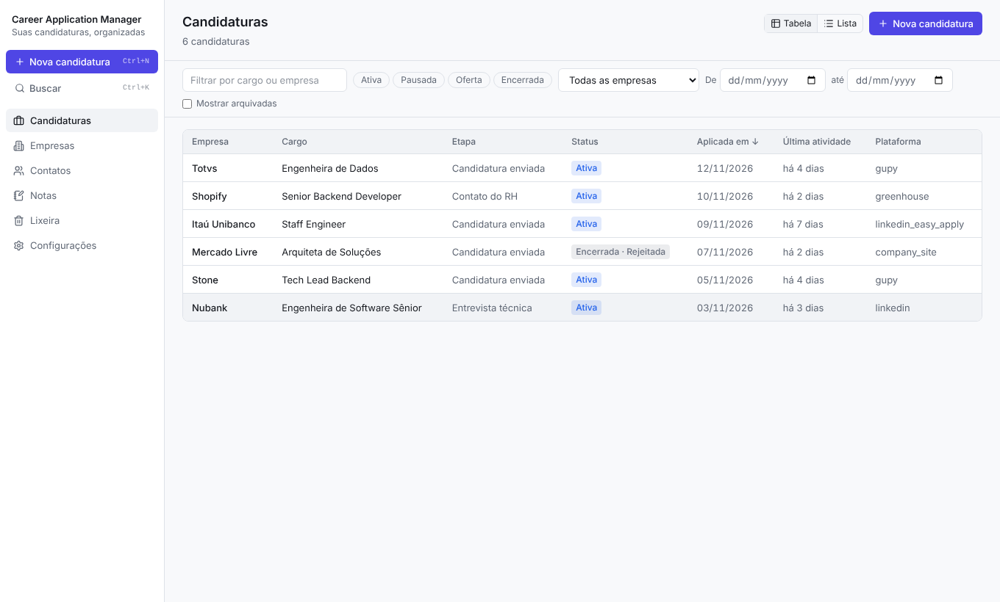
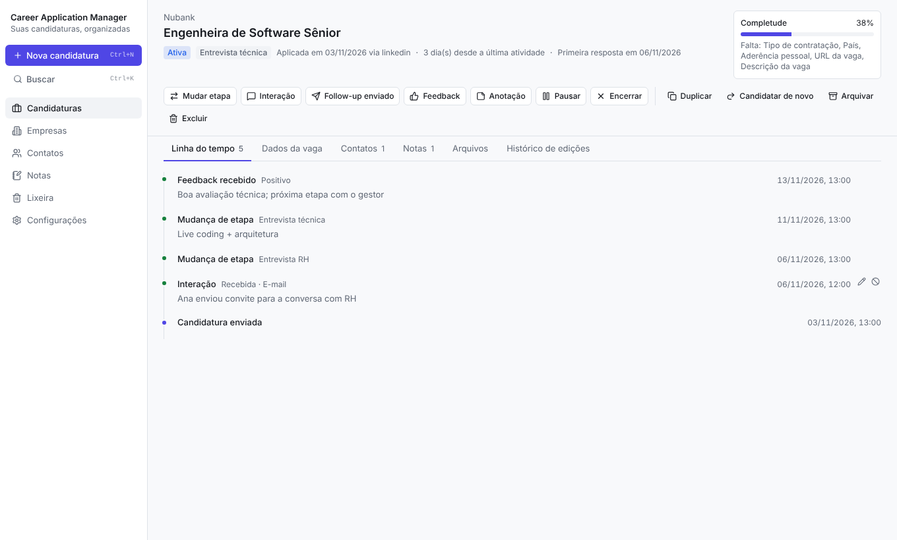

Career Application Manager: documentação técnica da V1.0
App desktop Windows, local e offline, para registrar manualmente candidaturas e acompanhar cada processo seletivo até o desfecho.
Estado documentado: main em 82cc2ae (merge do PR #1, 16/11/2026). Toda afirmação abaixo vem do código ou do PR.
1. Visão e escopo
“Eu encontro as vagas. Eu me candidato. Eu registro a candidatura. O aplicativo organiza, documenta, acompanha, lembra e analisa todo o restante.”
O CAM é o sistema de registro de uma busca de emprego. A unidade central é a candidatura, e o histórico do processo é uma linha do tempo de eventos confirmados pela usuária. A V1.0 entrega o núcleo “registro confiável”: cadastro rápido, linha do tempo, notas, anexos, empresas, contatos, busca, Lixeira e backup verificável.
| Dentro do escopo | Fora do escopo, por decisão de produto |
|---|---|
| Registro manual de candidaturas já feitas Acompanhamento por eventos datados (inclusive retroativos) Notas, anexos, contatos, empresas Dados 100% locais, sem rede |
Scraping, busca ou monitoramento de vagas Importação de vagas (inclusive do scraper que existe em paralelo) Catálogo/triagem de vagas Criar candidaturas ou presumir eventos automaticamente |
A fronteira é deliberada: o scraper de vagas é outro projeto. O CAM não tem nenhum código de rede de saída, e a sessão do Electron bloqueia qualquer requisição que não seja o próprio bundle (seção 4).


2. Arquitetura
Três processos do Electron, com fronteira rígida: o renderer (React) nunca acessa Node, disco ou banco. Toda operação é um canal IPC tipado, validado com Zod no processo principal e executado por um service transacional que não depende do Electron (por isso testável em Node puro).
flowchart LR
subgraph R["Renderer (Chromium, sandbox)"]
UI["React 18 + React Router
TanStack Query · Tailwind · cmdk"]
API["window.cam.<domínio>.<ação>()
montado a partir dos contratos"]
UI --> API
end
subgraph P["Preload (contextIsolation)"]
BR["camBridge.invoke(canal, input)
pathForFile · onDataChanged"]
end
subgraph M["Main (Node)"]
REG["register.ts
verifica origem do frame"]
DIS["dispatch.ts
Zod parse → handler → Result"]
SVC["services/*
casos de uso em transação"]
DOM["domain/*
funções puras (derive, normalize)"]
DB[("SQLite WAL
cam.db")]
FS[["files/ab/<sha256>"]]
BK[["backups/*.zip"]]
JOBS["jobs horários
backup diário · expurgo da Lixeira"]
end
API -->|"ipcRenderer.invoke('cam:x.y')"| BR
BR --> REG --> DIS --> SVC
SVC --> DOM
SVC --> DB
SVC --> FS
SVC --> BK
JOBS --> SVC
SVC -.->|"cam:data-changed"| UI
Camadas e responsabilidades
| Pasta | Responsabilidade | Regra |
|---|---|---|
src/shared | Contratos IPC (Zod), enums, DTOs, AppError com código | Única fonte de tipos entre main e renderer |
src/main/db | Schema Drizzle, migrações SQL versionadas, executor | Só para frente; nenhuma migração “down” |
src/main/domain | Derivação do status, normalização, IDs | Puro, sem I/O; cobertura mínima de 80% |
src/main/services | Candidaturas, eventos, notas, arquivos, busca, Lixeira, backup, auditoria | Cada escrita numa transação, incluindo índice de busca e auditoria |
src/main/ipc | Handlers finos, dispatch, registro dos canais | Validar entrada, chamar um service, nada mais |
src/preload | Ponte mínima: invoke genérico + 2 utilitários | Nome de canal validado por regex |
src/renderer | Telas, componentes, i18n pt-BR.ts | Sem acesso a Node; dados via TanStack Query |
Em números: ~5,1 mil linhas de TypeScript no processo principal e em shared, 79 canais IPC declarados em contracts.ts, 29 tabelas (27 de domínio + _migrations + search_index FTS5).
Dados no disco
%APPDATA%\CAM\ (ou CAM_DATA_DIR, usado pelos testes)
cam.db SQLite: WAL, synchronous=FULL, foreign_keys=ON, busy_timeout=5000
files/ab/<sha256> anexos endereçados por conteúdo
files/tmp/ escrita temporária antes do rename atômico
backups/ manual-*, auto-*, pre-restore-* (.zip) e pre-migration-* (.db)
logs/ electron-log, sem texto de notas nem salários3. Por que Electron + TypeScript, sem Python
A stack foi decidida pela Natalia em 16/11/2026, depois de um primeiro plano que previa integração com o scraper (em Python) e foi rejeitado junto com a ideia de importar vagas. Sem a integração, Python deixou de ter função no app.
| Critério | Electron + TS (escolhido) | Alternativa |
|---|---|---|
| Uma linguagem de ponta a ponta | TypeScript no main, preload, renderer e testes; tipos dos contratos compartilhados | Python + UI web exigiria duas linguagens e uma ponte própria |
| Distribuição no Windows | Um instalador NSIS por usuário, sem runtime extra | Python embutido (PyInstaller) aumenta tamanho, gera falsos positivos de antivírus e complica o build |
| Banco local | better-sqlite3: síncrono, transações reais, FTS5 embutido, rápido | Equivalente em Python, mas fora do processo da UI |
| Teste ponta a ponta | Playwright dirige o app Electron real | Mais difícil com UI nativa (Qt/Tk) |
| Custo | Electron pesa (Chromium embutido no instalador e na memória). Aceitável para um app pessoal de desktop. Tauri seria mais leve, mas traria Rust para o toolchain. | |
Escolhas de biblioteca relevantes: Drizzle pelo schema tipado e geração de SQL de migração legível (o SQL gerado é versionado e revisável); Zod para validar toda entrada IPC; UUID v7 como chave primária (ordenável no tempo, sem colisão entre backups); yazl/yauzl para o zip do backup, com leitura em streaming.
4. IPC tipado e endurecimento de segurança
Fluxo de uma chamada
sequenceDiagram
participant UI as Renderer
participant PL as Preload
participant RG as register.ts
participant DP as dispatch.ts
participant SV as Service
participant DB as SQLite
UI->>PL: invoke("events.record", input)
PL->>PL: regex ^[a-zA-Z]+\.[a-zA-Z]+$
PL->>RG: ipcRenderer.invoke("cam:events.record")
RG->>RG: isTrustedSender(frame.url)?
RG->>DP: dispatch(channel, raw)
DP->>DP: contracts[channel].input.parse(raw)
DP->>SV: handler(ctx, input)
SV->>DB: BEGIN … evento + derivados + índice + audit … COMMIT
SV-->>DP: dados
DP-->>UI: { ok: true, data }
Note over DP,UI: erro → { ok: false, error: { code, message, details } }
Erros são normalizados em toErrorPayload: AppError mantém o código; ZodError vira VALIDATION com o caminho de cada campo; SQLITE_BUSY vira DB_BUSY; violação de CHECK/FK vira CONFLICT; o resto vira UNEXPECTED. O log registra só canal e código, nunca o conteúdo.
Superfície de ataque
| Controle | Onde |
|---|---|
contextIsolation, sandbox, nodeIntegration: false, webSecurity | src/main/index.ts, createWindow |
CSP restritiva: default-src 'self', script-src 'self', object-src 'none', frame-ancestors 'none' | src/renderer/index.html |
Navegação e novas janelas bloqueadas; links externos só http(s), abertos no navegador do sistema | will-navigate, setWindowOpenHandler |
| Todas as permissões (câmera, notificações etc.) negadas | setPermissionRequestHandler/CheckHandler |
Toda requisição de rede cancelada, exceto file:, data:, blob:, devtools e o dev server | webRequest.onBeforeRequest |
| IPC aceito só de frames com URL do próprio app | isTrustedSender |
| Sem atualização de componentes do Chromium nem pings | disable-component-update, no-pings |
| Instância única (segunda abertura foca a janela existente) | requestSingleInstanceLock |
5. Modelo de dados
O schema completo do planejamento (seção 8) foi criado já na V1.0, inclusive as tabelas que só terão tela na V1.1 (entrevistas, testes, propostas, tarefas, lembretes, documentos, metas). Motivo: nada registrado agora precisará de migração destrutiva depois. O diagrama mostra o núcleo usado pela V1.0.
erDiagram
companies ||--o{ applications : "RESTRICT"
companies ||--o{ contacts : ""
applications ||--o{ events : "RESTRICT"
stages ||--o{ events : "stage_id"
stages ||--o{ applications : "current_stage_id (derivado)"
applications ||--o{ application_contacts : "CASCADE"
contacts ||--o{ application_contacts : "CASCADE"
contacts ||--o{ events : "SET NULL"
applications ||--o{ notes : "um dono no máximo"
companies ||--o{ notes : ""
contacts ||--o{ notes : ""
notes ||--o{ note_revisions : ""
applications ||--o{ attachments : "exatamente um dono"
files ||--o{ attachments : "sha256 único"
applications |o--o{ applications : "previous / duplicated_from"
applications {
text id PK "UUID v7"
text company_id FK
text title "CHECK não vazio"
text platform
text applied_at
text status "derivado: active|paused|offer|closed"
text outcome "derivado; só se closed"
text current_stage_id "derivado"
text last_activity_at "derivado"
text archived_at
text deleted_at "Lixeira"
}
events {
text id PK
text application_id FK
text type "CHECK enum"
text occurred_at "quando aconteceu"
text recorded_at "quando foi registrado"
text direction "in|out"
text outcome "obrigatório se closed"
text voided_at "anulação, nunca DELETE"
}
files {
text id PK
text sha256 "UNIQUE, len 64"
integer size_bytes
}
Integridade garantida pelo banco, não só pelo código
| Regra | Mecanismo |
|---|---|
| Enums válidos (status, desfecho, senioridade, modalidade, tipo de evento…) | CHECK … IN (…) em cada coluna |
| Desfecho existe se e somente se a candidatura está encerrada | CHECK ((status = 'closed') = (outcome IS NOT NULL)) |
| Faixa salarial coerente e moeda obrigatória quando há valor | CHECK min <= max, length(currency) = 3 |
stage_changed tem etapa; closed tem desfecho | events_stage_required, events_outcome_required |
| Nota com no máximo um dono; anexo com exatamente um dono | Soma de IS NOT NULL em CHECK |
| Empresa única por nome normalizado, entre as não excluídas | Índice único parcial companies(name_key) WHERE deleted_at IS NULL |
audit_log só de inserção | Triggers BEFORE UPDATE/DELETE … RAISE(ABORT) |
| Versão de currículo usada por uma candidatura é imutável | Trigger document_versions_immutable_when_used |
| Integridade referencial | FKs com RESTRICT/CASCADE/SET NULL por relação; foreign_keys=ON em toda conexão |
Datas são texto ISO 8601 em UTC (comparáveis lexicograficamente). Dados iniciais (9 etapas padrão, listas de plataforma/área/motivo de encerramento, modelos de nota, regras) são inseridos pela migração 0001 com IDs fixos, para serem idempotentes.
6. Linha do tempo como fonte da verdade
Status, etapa atual, primeira/última resposta recebida e última atividade são um cache em applications, produzido por uma função pura: deriveApplicationState(events) em src/main/domain/derive.ts. Cada escrita de evento recalcula o cache na mesma transação. “Reconstruir dados derivados” roda a mesma função para todas as candidaturas.
stateDiagram-v2 [*] --> active: applied active --> offer: offer_received / offer_updated active --> paused: paused offer --> paused: paused paused --> active: resumed (se pausou em active) paused --> offer: resumed (se pausou em offer) active --> closed: closed + outcome offer --> closed: closed + outcome paused --> closed: closed + outcome closed --> active: reopened
- Ordenação determinística:
occurred_at, depoisrecorded_at, depoisid. Um evento retroativo entra no lugar certo e o estado é recalculado do zero, não “aplicado por cima”. - Eventos inválidos são recusados: “retomar” sem pausa, “reabrir” sem encerramento, “encerrar” duas vezes. A função devolve
invalidEventIdse o service rejeita a escrita. - Correção e anulação: eventos nunca são apagados; anular preenche
voided_at+ motivo e o evento sai da derivação. Corrigir gera histórico emaudit_log. - Datas validadas: evento no futuro (tolerância de 5 min) ou antes da data da candidatura é recusado.
- Direção padrão:
applied/follow_up_sentsão saída; feedback, proposta e mudança de etapa são entrada. Isso alimenta “primeira/última resposta”, base das métricas de tempo de resposta da V3.
7. Migrações
| Migração | Origem | Conteúdo |
|---|---|---|
0000_init.sql | Gerada pelo drizzle-kit a partir de schema.ts | 27 tabelas, índices, FKs, CHECKs |
0001_search_and_seed.sql | Escrita à mão | FTS5, triggers de imutabilidade, dados iniciais |
O executor (src/main/db/migrate.ts) empacota os .sql no build via import.meta.glob, então o app instalado não depende de arquivos soltos.
flowchart TD
A[Abrir cam.db] --> B{banco já existia e há migrações pendentes?}
B -- sim --> C["VACUUM INTO backups/pre-migration-*.db"]
B -- não --> D
C --> D[Para cada migração pendente, em ordem]
D --> E["foreign_keys=OFF; BEGIN"]
E --> F[executar statements]
F --> G{"PRAGMA foreign_key_check vazio?"}
G -- não --> H[ROLLBACK e erro]
G -- sim --> I["INSERT em _migrations; COMMIT"]
I --> J["foreign_keys=ON"]
J --> D
H --> K["db.close() e diálogo: dados não alterados"]
- Só para frente: voltar atrás é restaurar o backup feito logo antes.
foreign_keys=OFFdurante a migração permite reconstruir tabelas (padrão do SQLite para alterar colunas); a checagem antes do commit impede referências órfãs.- Se abrir ou migrar falhar, o handle do banco é fechado antes de propagar o erro (correção do segundo erro de CI, seção 13), para que o arquivo possa ser restaurado ou substituído no Windows.
- Backups antigos são migrados ao restaurar; backups de esquema mais novo que o app são recusados.
8. Anexos: armazenamento endereçado por conteúdo
- O arquivo (caminho, arrastar, ou bytes de um print colado com Ctrl+V) é copiado para
files/tmp/<uuid>. Limite de 200 MB. - Calcula-se o SHA-256 em blocos de 1 MB.
- Se
files/<2 hex>/<sha>não existe, fazrenameatômico para lá. - Se já há linha em
filescom o mesmo hash, reaproveita; senão insere. Em seguida cria o vínculo emattachments(tipo, dono, nome exibido).
Consequências: anexar o mesmo PDF em dez candidaturas guarda um só arquivo; um crash no meio nunca deixa arquivo parcial com nome final; um rollback deixa no máximo um arquivo órfão, que a verificação de integridade aponta. O MIME é inferido pela extensão (sem leitura de conteúdo). Excluir um anexo remove o vínculo; o blob só sai quando ninguém mais o referencia.
9. Backup e restauração verificáveis
| Tipo | Quando | Retenção |
|---|---|---|
auto | Job horário; cria se o último tem mais de 24 h (primeira checagem 15 s após abrir) | 14 diários + 1 por semana ISO por mais 8 semanas |
manual | Botão em Configurações | Nunca apagado |
pre-restore | Antes de toda restauração | 5 mais recentes |
pre-migration (.db) | Antes de migrar um banco existente | 5 mais recentes |
Formato: zip com cam.db (snapshot consistente via VACUUM INTO, sem parar o app), files/ab/<sha> de cada anexo referenciado e manifest.json (versões do app e do esquema, contagem de linhas por tabela, SHA-256 e tamanho de cada entrada). auto e manual também são copiados, em melhor esforço, para uma pasta extra (ex.: OneDrive). Se algum anexo referenciado não estiver no disco, o backup falha em vez de sair incompleto.
flowchart TD Z[zip escolhido] --> X["extrair para tmp/restore-*
só entradas que casam com o padrão exato
(bloqueia path traversal)"] X --> M{"manifest ok?
formato, esquema conhecido"} M --> H{"hash de cada entrada confere?
nada fora do manifesto?"} H --> I{"integrity_check = ok
foreign_key_check vazio
contagens = manifesto"} I --> MG[aplicar migrações pendentes na cópia] MG --> T{{"Testar backup termina aqui"}} MG --> PR["backup pre-restore do estado atual"] PR --> SW["fechar banco; mover cam.db, -wal, -shm, files/ para tmp/replaced-*;
mover staging para o lugar"] SW -- falhou --> RB[devolver os arquivos antigos e reabrir] SW -- ok --> RO[reabrir e apagar o antigo]
Qualquer problema em qualquer etapa encerra com “Nada foi alterado.” Testado: ida e volta reproduz contagens e hashes; um byte corrompido é recusado; zip estranho ou com caminhos inesperados é recusado; backup de esquema antigo é migrado; de esquema mais novo é recusado; retenção e pasta extra.
10. Busca global (Ctrl+K)
- Tabela virtual FTS5
search_index(entity_type, entity_id, title, body)comtokenize = 'unicode61 remove_diacritics 2': “sao paulo” encontra “São Paulo”. - Indexa candidaturas (cargo, empresa, descrição, requisitos, competências, cidade), empresas, contatos, notas e nomes de anexos.
- Mantida pelos services na mesma transação de cada escrita; item excluído sai do índice. “Reconstruir índice” recria tudo.
- Consulta segura: cada palavra vira termo entre aspas com prefixo (
"pala"*), então a sintaxe do FTS5 digitada pela usuária não quebra a consulta. - Ranking
bm25com peso 5 no título e 1 no corpo; trecho com destaque viasnippet(). A paleta (cmdk) mistura resultados e comandos.
11. Lixeira, arquivamento, auditoria e desfazer
| Mecanismo | Como funciona |
|---|---|
| Arquivar | archived_at; some da lista padrão, continua pesquisável pelo filtro “Mostrar arquivadas” |
| Excluir | Soft delete (deleted_at) em candidaturas, empresas, contatos, notas e anexos; vai para a Lixeira por 30 dias |
| Expurgo automático | Job horário; ordem anexos → notas → candidaturas → contatos → empresas; item com dependentes vivos é mantido |
| Exclusão definitiva | Só a partir da Lixeira, com confirmação digitada; empresa com candidaturas (mesmo na Lixeira) é recusada |
| Histórico de edições | audit_log com {campo: [antes, depois]}, só inserção; sobrevive à exclusão definitiva |
| Versões de nota | Autosave; no máximo uma revisão por minuto (janela de 60 s substitui a última); restauráveis |
| Desfazer (10 s, Ctrl+Z) | Toast no renderer com a ação inversa: cadastro rápido → applications.undoCreate; arquivar → desarquivar; mover candidatura, empresa, contato, nota ou anexo para a Lixeira → restaurar |
12. Testes
| Nível | Ferramenta | Qtd. | O que cobre |
|---|---|---|---|
| Unidade | Vitest | 23 | Derivação de status, normalização, formatação |
| Integração | Vitest + SQLite real em pasta temporária | 49 | Candidaturas, eventos retroativos, restrições do banco, histórico, Lixeira, anexos, busca, IPC (dispatch), migrações, backup |
| Ponta a ponta | Playwright + Electron (build real) | 6 | Cadastro só com teclado; mudar etapa; anexar o mesmo arquivo duas vezes; Ctrl+K sem acento; excluir e restaurar; criar e testar backup |
- Vitest roda dentro do Node do Electron (
scripts/run-vitest.mjsusaELECTRON_RUN_AS_NODE=1). Assim só existe um build do better-sqlite3 emnode_modules, o do ABI do Electron, e os testes usam exatamente o binário que vai no instalador. - Os testes de integração criam o contexto com relógio controlável e
CAM_DATA_DIRtemporário; o mesmocreateContextdo app. - Cobertura (v8) sobre
domain,serviceseshared, com limite mínimo de 80% em linhas, funções, branches e statements parasrc/main/domain. - Playwright com 1 worker e
trace: off, screenshot só em falha.
13. CI e as duas falhas corrigidas
Workflow único (.github/workflows/ci.yml) em windows-latest, em todo PR e push na main, com timeout de 30 min:
flowchart LR A[checkout] --> B["pnpm 10 + Node 22
(cache pnpm)"] --> C["pnpm install --frozen-lockfile
postinstall recompila better-sqlite3"] C --> D[lint] --> E[typecheck] --> F["test:coverage"] --> G[build] --> H["Playwright e2e"] --> I["electron-builder --win nsis"] --> J["upload CAM-Setup-*.exe"]
| Run | Commit | Resultado | Causa | Correção |
|---|---|---|---|---|
| #1 | 15bd9f6 | falhou | pnpm install: @electron/rebuild fixa node-gyp numa URL git via SSH (git@github.com:electron/node-gyp.git); o runner não tem chave SSH | 3f0ff2d: pnpm.overrides aponta @electron/node-gyp para o mesmo fork publicado no npm, 10.2.0-electron.1 |
| #2 | 3f0ff2d | falhou | Testes: no Windows um arquivo SQLite aberto não pode ser apagado. A limpeza dos testes removia a pasta temporária antes de fechar o banco → EBUSY | 8e0ecfc: limpezas em LIFO (fecha o banco antes de apagar a pasta) e createContext fecha o handle se a migração falhar |
| #3 | 8e0ecfc | passou | Lint, typecheck, 72 testes, 6 e2e e instalador gerado | |
| #4 | 82cc2ae (merge) | passou | Mesmo pipeline na main | |
windows-latest é o que garante o alvo real; a segunda correção também melhorou o app (falha de migração não deixa mais o arquivo travado).14. Empacotamento do instalador Windows
Configuração (electron-builder.yml) | Efeito |
|---|---|
target: nsis, arch: x64 | Instalador CAM-Setup-1.0.0.exe |
perMachine: false, allowElevation: false | Instalação por usuário, sem precisar de administrador |
oneClick: false, allowToChangeInstallationDirectory | Assistente com escolha de pasta |
| Atalhos na área de trabalho e no menu Iniciar | Nome “Career Application Manager” |
deleteAppDataOnUninstall: false | Desinstalar nunca apaga %APPDATA%\CAM |
asarUnpack de better-sqlite3, bindings, file-uri-to-path | O .node nativo fica fora do asar para poder ser carregado |
npmRebuild: true + postinstall: electron-builder install-app-deps | Módulo nativo compilado para o ABI do Electron 38 |
appId: com.nataliatobias.cam = setAppUserModelId | Necessário para notificações nativas (V1.1) |
O instalador não é assinado: o Windows SmartScreen mostra “Editor desconhecido” na primeira execução (Mais informações → Executar assim mesmo). Ícone próprio também ainda não existe. Para obter o .exe: aba Actions → run verde → artefato installer, ou pnpm dist numa máquina Windows.
15. Decisões e trade-offs
| Decisão | Ganho | Custo aceito |
|---|---|---|
| Eventos como fonte da verdade, status como cache derivado | Eventos retroativos corretos; histórico completo; reconstrução sempre possível; base para analytics | Toda escrita de evento recalcula a candidatura (barato no volume pessoal) |
| Regras de integridade no SQL | Nenhum bug de código grava dado inválido; backups restaurados são checáveis | Mudar um enum exige migração com reconstrução de tabela |
| Schema completo já na V1.0 | V1.1 não precisa migrar dados de forma destrutiva | Tabelas vazias e colunas sem tela por enquanto |
| better-sqlite3 síncrono no processo principal | Transações simples e atômicas; sem pool, sem callbacks | Uma operação longa bloqueia o main (mitigado: backup usa VACUUM INTO, consultas são pequenas) |
synchronous=FULL com WAL | Durabilidade em queda de energia | Escritas um pouco mais lentas |
| Anexos por SHA-256 | Deduplicação, verificação de integridade, backup verificável | Nome original só no banco; abrir “o arquivo” exige o app |
| Rede bloqueada na sessão | Privacidade por construção; nada vaza | Sem favicon/logo de empresa, sem atualização automática |
| Migrações só para frente + backup antes | Executor simples, sem “down” mal testado | Voltar versão = restaurar backup |
| Vitest no Node do Electron | Um único binário nativo, o mesmo do instalador | Testes dependem do download do Electron |
| Markdown com pré-visualização em vez de editor visual (TipTap) | Menos dependências, dados portáveis | Edição menos amigável |
| Detalhe em página inteira, não painel lateral | Implementação mais simples | Perde contexto da lista ao abrir um item |
16. Limitações conhecidas e o que foi adiado
Adiado conscientemente da V1.0
| Item | Por quê | Destino |
|---|---|---|
| Aba Contexto (dossiê: empresa, matriz requisitos × evidências, cases STAR, pitch) | Precisa de modelagem própria que não está no schema da seção 8 | Próxima versão, com migração nova |
| Plano de etapas previsto × realizado | Depende de modelo de processo por vaga (detectado da descrição ou padrão) | Próxima versão |
| Tarefas, lembretes, notificações do Windows, bandeja, iniciar com o Windows | Escopo de “acompanhamento diário” | V1.1 (tabelas já existem) |
| Tela Hoje, kanban, agenda | Idem | V1.1 |
| Entrevistas, testes e propostas como entidades com tela | Hoje registrados como eventos | V1.1 (tabelas já existem) |
| Biblioteca de currículos versionados; currículo enviado por candidatura | Sem tela | V1.1 (tabelas e trigger de imutabilidade já existem) |
| Dashboard, metas, exportação CSV | Analytics | V1.1/V3 (tabela goals já existe) |
| Modelos de cadastro rápido | Tabela templates sem tela | V1.1 |
| Ícone do app e assinatura de código | Exige ativo gráfico e certificado | A definir |
Limitações técnicas atuais
- Fechar a janela encerra o app (sem bandeja); jobs de backup e expurgo só rodam com o app aberto.
- Ctrl+1–7 só mapeia as telas existentes (Ctrl+2 Candidaturas, Ctrl+5 Empresas).
- A coluna Plataforma na tabela exibe a chave interna (
linkedin_easy_apply,company_site) em vez do rótulo da lista. - Datas e números via
Intl, sem biblioteca de i18n; só pt-BR. - Busca não indexa o conteúdo dos anexos (só o nome).
- MIME por extensão; sem pré-visualização de PDF dentro do app.
- Sem sincronização entre máquinas; a pasta extra de backup é a estratégia de cópia externa.
- Build Linux existe só como
dirpara testes; o alvo suportado é Windows x64.
17. Referências
- PR #1, V1.0: github.com/nataliatobiasdev/agregador-carreiras/pull/1
- Runs do CI: aba Actions
- README do repositório: comandos de desenvolvimento (
pnpm dev,test,test:e2e,dist,db:generate) - Planejamento v2 (intenção de produto e roadmap V1.0 → V4): documento privado da autora